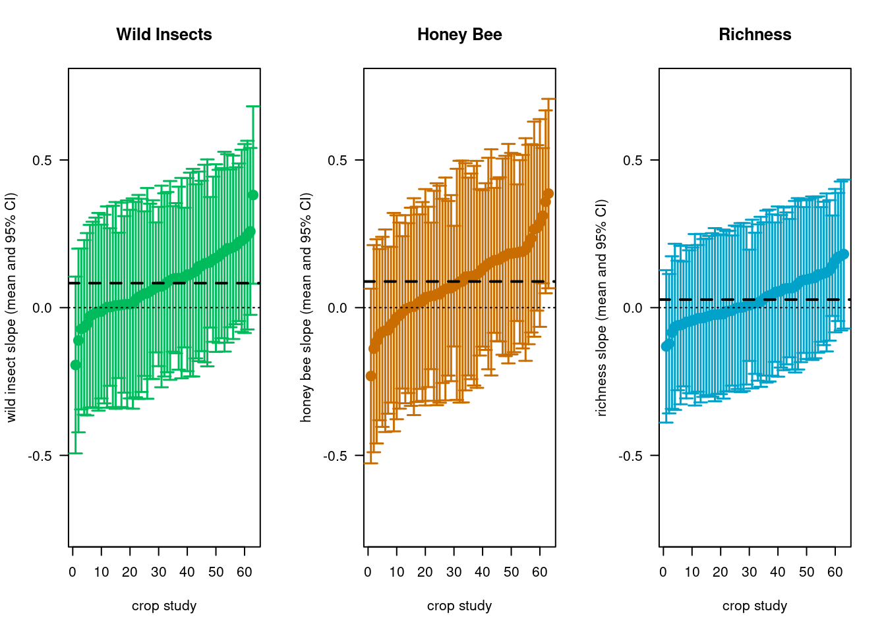
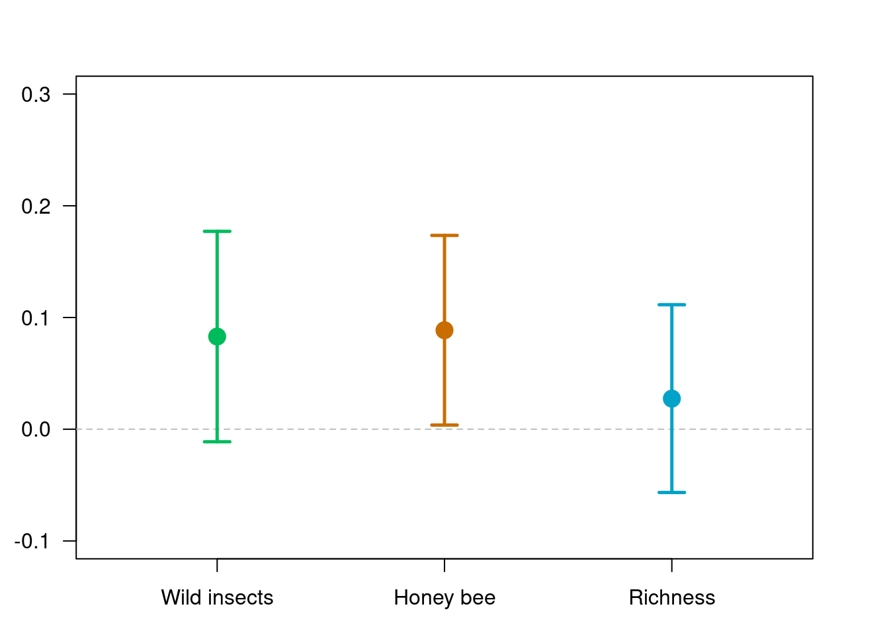

Pollinator contribution to crop yield
Results
1) What are the relative contributions of honey bees versus wild insects to crop visitation worldwide?
We observe a large variation in the relative contribution of honey bee visitation rates and other wild insects within and acorss crops. While some crops are solely visited by wild insects in some areas, others are mainly visited by honeybees.
Fig 1: This figure shows the proportion of total visits provided by wild insects (vs. honey bee) for each pollination study. In these boxplots, the bold center line is the median, the hollow boxes cover the interquartile range (IQR), and the whiskers extend to the most extreme points within 1.5*IQR from the median. If any points are more extreme than this, they are plotted as gray circles.
2) What are the relative contributions of honey bees versus wild insects to crop yield worldwide?
mean_wi ci_lower_wi
Agustin_Saez_Rubus_idaeus_Argentina 0.0565828638 -0.239741424
Alejandro_Trillo_Fragaria_ananassa_Spain -0.0545256463 -0.362092832
Alexandra_Maria_Klein_Prunus_dulcis_USA 0.1850170401 -0.103740607
Alison_D_Oreilly_Brassica_napus_Ireland 0.1104542591 -0.231939746
Ariza_etal_apple_Belgium 0.1010572851 -0.208128998
Ariza_etal_sweetcherry_Belgium 0.0634693702 -0.239343869
Breno_M_Freitas_Anacardium_occidentale_Brazil 0.1383419948 -0.181363129
Breno_M_Freitas_Malpighia_emarginata_Brazil 0.1114751339 -0.213505070
Bryony_Willcox_Mangifera_indica_Australia 0.1673805561 -0.161813604
Bryony_Willcox_Persea_americana_Australia 0.2581152206 -0.024274568
Carlos_H_Vergara_Coffea_arabica_Mexico 0.0878035838 -0.216726533
Charlie_Nicholson_Vaccinium_corymbosum_USA 0.1228772576 -0.171363609
Claire_Kremen_Fragaria_ananassa_USA -0.0648423842 -0.359738097
Davi_L_Ramos_Phaseolus_vulgaris L_Brazil 0.2024028843 -0.065965294
David_Crowder_Brassica_napus_USA -0.0717302623 -0.345039911
David_Crowder_Fragaria_ananassa_USA 0.0128527636 -0.285348763
David_Kleijn_Malus_domestica_Netherlands_study_B 0.1432616492 -0.146044393
David_Kleijn_Vaccinium_corymbosum_Netherlands 0.0006040936 -0.266559813
Diego_Nabaes_Jodar_Apple_Argentina 0.0500176227 -0.230568339
Dupont_redclover_Denmark 0.2105069649 -0.055439124
Eeraerts_etal_sweetcherry_Belgium 0.2265369917 -0.081519746
Fabiana_Oliveira_da_Silva_Malus_domestica_Brazil -0.0122043407 -0.306989423
Finbarr_G_Horgan_Abelmoschus_esculentus_Philippines 0.2038916857 -0.105516804
Finbarr_G_Horgan_Cucumis_sativus_Philippines 0.0146411211 -0.303462425
Finbarr_G_Horgan_Lagenaria_siceraria_Philippines 0.0777713171 -0.231224043
Finbarr_G_Horgan_Luffa_acutangula_Philippines -0.0271330577 -0.335149558
Finbarr_G_Horgan_Momordica_charantia_Philippines 0.0951300686 -0.241406460
Georg_Andersson_Brassica_rapa_Sweden -0.0239281239 -0.336803853
Guiomar_Nates_Parra_Vaccinium_meridionale_Colombia 0.0375966314 -0.305128497
Hajnalka_Szentgyorgyi_Fagopyrum_esculentum_Poland 0.1506801035 -0.196578014
Hisatomo_Taki_Fagopyrum_esculentum_Japan 0.2229523448 -0.045039988
Ignasi_Bartomeus_Brassica_napus_Sweden -0.1911649992 -0.489770044
Jens_Astrom_Malus_domestica_Norway 0.2304919699 -0.089113480
Jens_Astrom_Trifolium_pratense_Norway 0.0988310827 -0.156383143
Jeroen_Scheper_Helianthus_annuus_France 0.1650848925 -0.115211705
Jessica_D_Petersen_Cucurbita_pepo_USA 0.0726645744 -0.197091652
Jessica_Knapp_Cucurbita_pepo_UK 0.0428612557 -0.282466409
Juliana_Hipolito_Coffea_arabica_Brazil 0.0083400159 -0.240802221
Katherine_LW_Burns_Vicia_faba_Ireland -0.0037653004 -0.321964485
Katrine_Hansen_Psidium_guajava_Thailand 0.0038681810 -0.334551336
Leah_Blechschmidt_Malus_domestica_Canada 0.0728757683 -0.265906660
Luisa_G_Carvalheiro_Mangifera_indica_South_Africa 0.1713057361 -0.122715335
Marcos_Minarro_Malus_domestica_Spain 0.1054870757 -0.131793615
Mark_Otieno_Cajanus_cajan_Kenya 0.2440291016 -0.074536884
Natacha_Chacoff_Citrus_limon_Argentina 0.0294332838 -0.299168033
Natacha_Chacoff_Citrus_paradisi_Argentina 0.0095877492 -0.339817666
Nicolas_J_Vereecken_Malus_domestica_Belgium 0.0106798636 -0.332410380
Nicolas_J_Vereecken_Malus_domestica_France -0.0120043795 -0.344497624
Nicolas_J_Vereecken_Vaccinium_corymbosum_Belgium 0.0492685657 -0.304189843
Pablo_Cavigliasso_Vaccinium_corymbosum_Argentina -0.1078751659 -0.417662172
Riccardo_Bommarco_Brassica_napus_Sweden 0.1540111020 -0.187046997
Ruan_Veldtman_Helianthus_annuus_South_Africa 0.1988349424 -0.118900112
Silvia_Castro_Actinidia_deliciosa_Portugal 0.0254770721 -0.329107604
Simon_Potts_Vicia_faba_UK -0.0153749071 -0.336187742
Smitha_Krishnan_Coffea_canephora_India 0.3251477701 0.006799997
Taylor_Ricketts_Coffea_arabica_Costa_Rica 0.1682884429 -0.148363705
Thijs_Fijen_Allium_porrum_France 0.1551472763 -0.066557624
Thijs_Fijen_Allium_porrum_Italy 0.0766781214 -0.146510443
Timothy_Weekers_Malus_domestica_France 0.1002825263 -0.236607920
Timothy_Weekers_Malus_domestica_Morocco 0.1180755929 -0.230474620
Timothy_Weekers_Malus_domestica_Netherlands 0.0130009394 -0.335712804
Timothy_Weekers_Malus_domestica_Spain 0.0063765270 -0.331768876
Virginie_Boreux_Coffea_canephora_India 0.1065703540 -0.143602970
ci_upper_wi mean_hb
Agustin_Saez_Rubus_idaeus_Argentina 0.3529072 0.360109906
Alejandro_Trillo_Fragaria_ananassa_Spain 0.2530415 0.173686933
Alexandra_Maria_Klein_Prunus_dulcis_USA 0.4737747 -0.001232459
Alison_D_Oreilly_Brassica_napus_Ireland 0.4528483 0.198552659
Ariza_etal_apple_Belgium 0.4102436 0.235915585
Ariza_etal_sweetcherry_Belgium 0.3662826 -0.004473617
Breno_M_Freitas_Anacardium_occidentale_Brazil 0.4580471 -0.114471110
Breno_M_Freitas_Malpighia_emarginata_Brazil 0.4364553 0.089839764
Bryony_Willcox_Mangifera_indica_Australia 0.4965747 0.109436413
Bryony_Willcox_Persea_americana_Australia 0.5405050 0.021840230
Carlos_H_Vergara_Coffea_arabica_Mexico 0.3923337 0.057427736
Charlie_Nicholson_Vaccinium_corymbosum_USA 0.4171181 0.387978162
Claire_Kremen_Fragaria_ananassa_USA 0.2300533 -0.027028028
Davi_L_Ramos_Phaseolus_vulgaris L_Brazil 0.4707711 -0.015333122
David_Crowder_Brassica_napus_USA 0.2015794 0.063304221
David_Crowder_Fragaria_ananassa_USA 0.3110543 0.189922847
David_Kleijn_Malus_domestica_Netherlands_study_B 0.4325677 -0.075906461
David_Kleijn_Vaccinium_corymbosum_Netherlands 0.2677680 0.119978248
Diego_Nabaes_Jodar_Apple_Argentina 0.3306036 0.161120033
Dupont_redclover_Denmark 0.4764531 0.164396268
Eeraerts_etal_sweetcherry_Belgium 0.5345937 -0.081438463
Fabiana_Oliveira_da_Silva_Malus_domestica_Brazil 0.2825807 -0.232423245
Finbarr_G_Horgan_Abelmoschus_esculentus_Philippines 0.5133002 0.089409899
Finbarr_G_Horgan_Cucumis_sativus_Philippines 0.3327447 -0.032445477
Finbarr_G_Horgan_Lagenaria_siceraria_Philippines 0.3867667 0.020837984
Finbarr_G_Horgan_Luffa_acutangula_Philippines 0.2808834 0.002405020
Finbarr_G_Horgan_Momordica_charantia_Philippines 0.4316666 0.046327553
Georg_Andersson_Brassica_rapa_Sweden 0.2889476 0.186181483
Guiomar_Nates_Parra_Vaccinium_meridionale_Colombia 0.3803218 0.046042248
Hajnalka_Szentgyorgyi_Fagopyrum_esculentum_Poland 0.4979382 0.154958576
Hisatomo_Taki_Fagopyrum_esculentum_Japan 0.4909447 0.134254299
Ignasi_Bartomeus_Brassica_napus_Sweden 0.1074400 0.065524406
Jens_Astrom_Malus_domestica_Norway 0.5500974 0.214338082
Jens_Astrom_Trifolium_pratense_Norway 0.3540453 -0.058076721
Jeroen_Scheper_Helianthus_annuus_France 0.4453815 0.271383092
Jessica_D_Petersen_Cucurbita_pepo_USA 0.3424208 0.140677186
Jessica_Knapp_Cucurbita_pepo_UK 0.3681889 -0.139369759
Juliana_Hipolito_Coffea_arabica_Brazil 0.2574823 0.311050030
Katherine_LW_Burns_Vicia_faba_Ireland 0.3144339 0.106881272
Katrine_Hansen_Psidium_guajava_Thailand 0.3422877 0.184659411
Leah_Blechschmidt_Malus_domestica_Canada 0.4116582 -0.049139221
Luisa_G_Carvalheiro_Mangifera_indica_South_Africa 0.4653268 -0.090873798
Marcos_Minarro_Malus_domestica_Spain 0.3427678 0.186862872
Mark_Otieno_Cajanus_cajan_Kenya 0.5625951 0.107179287
Natacha_Chacoff_Citrus_limon_Argentina 0.3580346 0.039766240
Natacha_Chacoff_Citrus_paradisi_Argentina 0.3589932 0.290582172
Nicolas_J_Vereecken_Malus_domestica_Belgium 0.3537701 0.063850308
Nicolas_J_Vereecken_Malus_domestica_France 0.3204889 0.268067404
Nicolas_J_Vereecken_Vaccinium_corymbosum_Belgium 0.4027270 0.080010536
Pablo_Cavigliasso_Vaccinium_corymbosum_Argentina 0.2019118 0.189756083
Riccardo_Bommarco_Brassica_napus_Sweden 0.4950692 0.183613640
Ruan_Veldtman_Helianthus_annuus_South_Africa 0.5165700 -0.078244025
Silvia_Castro_Actinidia_deliciosa_Portugal 0.3800617 0.036586628
Simon_Potts_Vicia_faba_UK 0.3054379 0.183528709
Smitha_Krishnan_Coffea_canephora_India 0.6434955 0.178838840
Taylor_Ricketts_Coffea_arabica_Costa_Rica 0.4849406 0.011538032
Thijs_Fijen_Allium_porrum_France 0.3768522 0.074085139
Thijs_Fijen_Allium_porrum_Italy 0.2998667 0.159626256
Timothy_Weekers_Malus_domestica_France 0.4371730 0.035809411
Timothy_Weekers_Malus_domestica_Morocco 0.4666258 0.105658632
Timothy_Weekers_Malus_domestica_Netherlands 0.3617147 0.114146067
Timothy_Weekers_Malus_domestica_Spain 0.3445219 0.003412244
Virginie_Boreux_Coffea_canephora_India 0.3567437 0.039051758
ci_lower_hb ci_upper_hb
Agustin_Saez_Rubus_idaeus_Argentina 0.049658088 0.67056172
Alejandro_Trillo_Fragaria_ananassa_Spain -0.159495605 0.50686947
Alexandra_Maria_Klein_Prunus_dulcis_USA -0.289547550 0.28708263
Alison_D_Oreilly_Brassica_napus_Ireland -0.179760442 0.57686576
Ariza_etal_apple_Belgium -0.083766430 0.55559760
Ariza_etal_sweetcherry_Belgium -0.323845226 0.31489799
Breno_M_Freitas_Anacardium_occidentale_Brazil -0.461368725 0.23242650
Breno_M_Freitas_Malpighia_emarginata_Brazil -0.321315294 0.50099482
Bryony_Willcox_Mangifera_indica_Australia -0.263730013 0.48260284
Bryony_Willcox_Persea_americana_Australia -0.274108597 0.31778906
Carlos_H_Vergara_Coffea_arabica_Mexico -0.255204351 0.37005982
Charlie_Nicholson_Vaccinium_corymbosum_USA 0.066061445 0.70989488
Claire_Kremen_Fragaria_ananassa_USA -0.343014969 0.28895891
Davi_L_Ramos_Phaseolus_vulgaris L_Brazil -0.273744670 0.24307843
David_Crowder_Brassica_napus_USA -0.232532187 0.35914063
David_Crowder_Fragaria_ananassa_USA -0.121523813 0.50136951
David_Kleijn_Malus_domestica_Netherlands_study_B -0.359733929 0.20792101
David_Kleijn_Vaccinium_corymbosum_Netherlands -0.162912899 0.40286939
Diego_Nabaes_Jodar_Apple_Argentina -0.113729704 0.43596977
Dupont_redclover_Denmark -0.114278914 0.44307145
Eeraerts_etal_sweetcherry_Belgium -0.404420824 0.24154390
Fabiana_Oliveira_da_Silva_Malus_domestica_Brazil -0.528812346 0.06396586
Finbarr_G_Horgan_Abelmoschus_esculentus_Philippines -0.321673382 0.50049318
Finbarr_G_Horgan_Cucumis_sativus_Philippines -0.379003836 0.31411288
Finbarr_G_Horgan_Lagenaria_siceraria_Philippines -0.316861547 0.35853751
Finbarr_G_Horgan_Luffa_acutangula_Philippines -0.334104714 0.33891475
Finbarr_G_Horgan_Momordica_charantia_Philippines -0.322213539 0.41486865
Georg_Andersson_Brassica_rapa_Sweden -0.150741690 0.52310466
Guiomar_Nates_Parra_Vaccinium_meridionale_Colombia -0.331109959 0.42319446
Hajnalka_Szentgyorgyi_Fagopyrum_esculentum_Poland -0.229429469 0.53934662
Hisatomo_Taki_Fagopyrum_esculentum_Japan -0.131300506 0.39980910
Ignasi_Bartomeus_Brassica_napus_Sweden -0.250296605 0.38134542
Jens_Astrom_Malus_domestica_Norway -0.124428688 0.55310485
Jens_Astrom_Trifolium_pratense_Norway -0.322018895 0.20586545
Jeroen_Scheper_Helianthus_annuus_France -0.009430261 0.55219644
Jessica_D_Petersen_Cucurbita_pepo_USA -0.142397322 0.42375169
Jessica_Knapp_Cucurbita_pepo_UK -0.491158475 0.21241896
Juliana_Hipolito_Coffea_arabica_Brazil 0.081956691 0.54014337
Katherine_LW_Burns_Vicia_faba_Ireland -0.242450379 0.45621292
Katrine_Hansen_Psidium_guajava_Thailand -0.188261205 0.55758003
Leah_Blechschmidt_Malus_domestica_Canada -0.420130234 0.32185179
Luisa_G_Carvalheiro_Mangifera_indica_South_Africa -0.381245018 0.19949742
Marcos_Minarro_Malus_domestica_Spain -0.044901921 0.41862767
Mark_Otieno_Cajanus_cajan_Kenya -0.228466159 0.44282473
Natacha_Chacoff_Citrus_limon_Argentina -0.316744915 0.39627739
Natacha_Chacoff_Citrus_paradisi_Argentina -0.062402948 0.64356729
Nicolas_J_Vereecken_Malus_domestica_Belgium -0.314672069 0.44237269
Nicolas_J_Vereecken_Malus_domestica_France -0.097317177 0.63345198
Nicolas_J_Vereecken_Vaccinium_corymbosum_Belgium -0.312899713 0.47292079
Pablo_Cavigliasso_Vaccinium_corymbosum_Argentina -0.138728279 0.51824045
Riccardo_Bommarco_Brassica_napus_Sweden -0.155864938 0.52309222
Ruan_Veldtman_Helianthus_annuus_South_Africa -0.422319579 0.26583153
Silvia_Castro_Actinidia_deliciosa_Portugal -0.271783334 0.34495659
Simon_Potts_Vicia_faba_UK -0.158713162 0.52577058
Smitha_Krishnan_Coffea_canephora_India -0.178182284 0.53585996
Taylor_Ricketts_Coffea_arabica_Costa_Rica -0.319983332 0.34305940
Thijs_Fijen_Allium_porrum_France -0.130491920 0.27866220
Thijs_Fijen_Allium_porrum_Italy -0.085097181 0.40434969
Timothy_Weekers_Malus_domestica_France -0.331904423 0.40352324
Timothy_Weekers_Malus_domestica_Morocco -0.280465729 0.49178299
Timothy_Weekers_Malus_domestica_Netherlands -0.271653800 0.49994593
Timothy_Weekers_Malus_domestica_Spain -0.365031910 0.37185640
Virginie_Boreux_Coffea_canephora_India -0.208257838 0.28636135
mean_rich ci_lower_rich
Agustin_Saez_Rubus_idaeus_Argentina 0.0553122694 -0.20174079
Alejandro_Trillo_Fragaria_ananassa_Spain 0.0179299163 -0.24527934
Alexandra_Maria_Klein_Prunus_dulcis_USA 0.1729890970 -0.07842292
Alison_D_Oreilly_Brassica_napus_Ireland 0.0536630745 -0.23269324
Ariza_etal_apple_Belgium -0.0344468547 -0.30039256
Ariza_etal_sweetcherry_Belgium 0.0647767473 -0.19118948
Breno_M_Freitas_Anacardium_occidentale_Brazil -0.0280873413 -0.29752466
Breno_M_Freitas_Malpighia_emarginata_Brazil 0.0986604729 -0.17670226
Bryony_Willcox_Mangifera_indica_Australia 0.0728587913 -0.21580556
Bryony_Willcox_Persea_americana_Australia 0.1785865722 -0.07259541
Carlos_H_Vergara_Coffea_arabica_Mexico -0.0306060325 -0.29400125
Charlie_Nicholson_Vaccinium_corymbosum_USA -0.0826787281 -0.33985394
Claire_Kremen_Fragaria_ananassa_USA -0.1288127306 -0.38567375
Davi_L_Ramos_Phaseolus_vulgaris L_Brazil 0.0511027814 -0.18436957
David_Crowder_Brassica_napus_USA -0.0413514122 -0.28744408
David_Crowder_Fragaria_ananassa_USA -0.0468421880 -0.30480718
David_Kleijn_Malus_domestica_Netherlands_study_B -0.0100457463 -0.26354548
David_Kleijn_Vaccinium_corymbosum_Netherlands 0.0653355261 -0.16783028
Diego_Nabaes_Jodar_Apple_Argentina -0.0465829441 -0.28764353
Dupont_redclover_Denmark -0.1210899851 -0.35617903
Eeraerts_etal_sweetcherry_Belgium 0.1107326006 -0.15271099
Fabiana_Oliveira_da_Silva_Malus_domestica_Brazil -0.0350640740 -0.28254244
Finbarr_G_Horgan_Abelmoschus_esculentus_Philippines 0.0071158699 -0.25892535
Finbarr_G_Horgan_Cucumis_sativus_Philippines 0.0941063143 -0.17318945
Finbarr_G_Horgan_Lagenaria_siceraria_Philippines -0.0226329979 -0.28966382
Finbarr_G_Horgan_Luffa_acutangula_Philippines -0.0103470935 -0.28040922
Finbarr_G_Horgan_Momordica_charantia_Philippines 0.0899097687 -0.18379699
Georg_Andersson_Brassica_rapa_Sweden 0.1181841082 -0.14777652
Guiomar_Nates_Parra_Vaccinium_meridionale_Colombia 0.0199407870 -0.26620410
Hajnalka_Szentgyorgyi_Fagopyrum_esculentum_Poland 0.0798775490 -0.20855083
Hisatomo_Taki_Fagopyrum_esculentum_Japan 0.1141913003 -0.12799951
Ignasi_Bartomeus_Brassica_napus_Sweden 0.0305461353 -0.22775219
Jens_Astrom_Malus_domestica_Norway 0.0951425734 -0.17469924
Jens_Astrom_Trifolium_pratense_Norway 0.1116494624 -0.11546737
Jeroen_Scheper_Helianthus_annuus_France 0.0924971484 -0.15360949
Jessica_D_Petersen_Cucurbita_pepo_USA 0.0150364605 -0.22295916
Jessica_Knapp_Cucurbita_pepo_UK 0.0633708044 -0.21064062
Juliana_Hipolito_Coffea_arabica_Brazil 0.1258359588 -0.11203142
Katherine_LW_Burns_Vicia_faba_Ireland 0.0665232203 -0.20767537
Katrine_Hansen_Psidium_guajava_Thailand -0.0207675531 -0.30522414
Leah_Blechschmidt_Malus_domestica_Canada 0.0004269041 -0.28415910
Luisa_G_Carvalheiro_Mangifera_indica_South_Africa 0.1572788989 -0.08449096
Marcos_Minarro_Malus_domestica_Spain -0.0541828312 -0.26500839
Mark_Otieno_Cajanus_cajan_Kenya 0.0996134870 -0.17156180
Natacha_Chacoff_Citrus_limon_Argentina -0.0027066421 -0.28220699
Natacha_Chacoff_Citrus_paradisi_Argentina -0.0237948528 -0.29910222
Nicolas_J_Vereecken_Malus_domestica_Belgium 0.0125400929 -0.27128328
Nicolas_J_Vereecken_Malus_domestica_France -0.0633599660 -0.34314876
Nicolas_J_Vereecken_Vaccinium_corymbosum_Belgium -0.0231004482 -0.31443071
Pablo_Cavigliasso_Vaccinium_corymbosum_Argentina -0.0571710731 -0.32414523
Riccardo_Bommarco_Brassica_napus_Sweden -0.0124444929 -0.28270590
Ruan_Veldtman_Helianthus_annuus_South_Africa -0.0223296395 -0.29145070
Silvia_Castro_Actinidia_deliciosa_Portugal 0.0417009631 -0.24772477
Simon_Potts_Vicia_faba_UK 0.0004793264 -0.27333822
Smitha_Krishnan_Coffea_canephora_India -0.0664272160 -0.28479466
Taylor_Ricketts_Coffea_arabica_Costa_Rica 0.0422363911 -0.22950034
Thijs_Fijen_Allium_porrum_France 0.0076200112 -0.18070056
Thijs_Fijen_Allium_porrum_Italy 0.1416525666 -0.02839096
Timothy_Weekers_Malus_domestica_France 0.0023420503 -0.28034401
Timothy_Weekers_Malus_domestica_Morocco 0.0374055958 -0.25194938
Timothy_Weekers_Malus_domestica_Netherlands -0.0401458997 -0.32867303
Timothy_Weekers_Malus_domestica_Spain -0.0345965162 -0.31821404
Virginie_Boreux_Coffea_canephora_India 0.1690529563 -0.04761783
ci_upper_rich
Agustin_Saez_Rubus_idaeus_Argentina 0.3123653
Alejandro_Trillo_Fragaria_ananassa_Spain 0.2811392
Alexandra_Maria_Klein_Prunus_dulcis_USA 0.4244011
Alison_D_Oreilly_Brassica_napus_Ireland 0.3400194
Ariza_etal_apple_Belgium 0.2314989
Ariza_etal_sweetcherry_Belgium 0.3207430
Breno_M_Freitas_Anacardium_occidentale_Brazil 0.2413500
Breno_M_Freitas_Malpighia_emarginata_Brazil 0.3740232
Bryony_Willcox_Mangifera_indica_Australia 0.3615231
Bryony_Willcox_Persea_americana_Australia 0.4297686
Carlos_H_Vergara_Coffea_arabica_Mexico 0.2327892
Charlie_Nicholson_Vaccinium_corymbosum_USA 0.1744965
Claire_Kremen_Fragaria_ananassa_USA 0.1280483
Davi_L_Ramos_Phaseolus_vulgaris L_Brazil 0.2865751
David_Crowder_Brassica_napus_USA 0.2047413
David_Crowder_Fragaria_ananassa_USA 0.2111228
David_Kleijn_Malus_domestica_Netherlands_study_B 0.2434540
David_Kleijn_Vaccinium_corymbosum_Netherlands 0.2985013
Diego_Nabaes_Jodar_Apple_Argentina 0.1944776
Dupont_redclover_Denmark 0.1139991
Eeraerts_etal_sweetcherry_Belgium 0.3741762
Fabiana_Oliveira_da_Silva_Malus_domestica_Brazil 0.2124143
Finbarr_G_Horgan_Abelmoschus_esculentus_Philippines 0.2731571
Finbarr_G_Horgan_Cucumis_sativus_Philippines 0.3614021
Finbarr_G_Horgan_Lagenaria_siceraria_Philippines 0.2443978
Finbarr_G_Horgan_Luffa_acutangula_Philippines 0.2597150
Finbarr_G_Horgan_Momordica_charantia_Philippines 0.3636165
Georg_Andersson_Brassica_rapa_Sweden 0.3841447
Guiomar_Nates_Parra_Vaccinium_meridionale_Colombia 0.3060857
Hajnalka_Szentgyorgyi_Fagopyrum_esculentum_Poland 0.3683059
Hisatomo_Taki_Fagopyrum_esculentum_Japan 0.3563821
Ignasi_Bartomeus_Brassica_napus_Sweden 0.2888445
Jens_Astrom_Malus_domestica_Norway 0.3649844
Jens_Astrom_Trifolium_pratense_Norway 0.3387663
Jeroen_Scheper_Helianthus_annuus_France 0.3386038
Jessica_D_Petersen_Cucurbita_pepo_USA 0.2530321
Jessica_Knapp_Cucurbita_pepo_UK 0.3373822
Juliana_Hipolito_Coffea_arabica_Brazil 0.3637033
Katherine_LW_Burns_Vicia_faba_Ireland 0.3407218
Katrine_Hansen_Psidium_guajava_Thailand 0.2636890
Leah_Blechschmidt_Malus_domestica_Canada 0.2850129
Luisa_G_Carvalheiro_Mangifera_indica_South_Africa 0.3990488
Marcos_Minarro_Malus_domestica_Spain 0.1566427
Mark_Otieno_Cajanus_cajan_Kenya 0.3707888
Natacha_Chacoff_Citrus_limon_Argentina 0.2767937
Natacha_Chacoff_Citrus_paradisi_Argentina 0.2515125
Nicolas_J_Vereecken_Malus_domestica_Belgium 0.2963635
Nicolas_J_Vereecken_Malus_domestica_France 0.2164288
Nicolas_J_Vereecken_Vaccinium_corymbosum_Belgium 0.2682298
Pablo_Cavigliasso_Vaccinium_corymbosum_Argentina 0.2098031
Riccardo_Bommarco_Brassica_napus_Sweden 0.2578169
Ruan_Veldtman_Helianthus_annuus_South_Africa 0.2467914
Silvia_Castro_Actinidia_deliciosa_Portugal 0.3311267
Simon_Potts_Vicia_faba_UK 0.2742969
Smitha_Krishnan_Coffea_canephora_India 0.1519402
Taylor_Ricketts_Coffea_arabica_Costa_Rica 0.3139731
Thijs_Fijen_Allium_porrum_France 0.1959406
Thijs_Fijen_Allium_porrum_Italy 0.3116961
Timothy_Weekers_Malus_domestica_France 0.2850281
Timothy_Weekers_Malus_domestica_Morocco 0.3267606
Timothy_Weekers_Malus_domestica_Netherlands 0.2483812
Timothy_Weekers_Malus_domestica_Spain 0.2490210
Virginie_Boreux_Coffea_canephora_India 0.3857237
crop
Agustin_Saez_Rubus_idaeus_Argentina Agustin_Saez_Rubus_idaeus_Argentina
Alejandro_Trillo_Fragaria_ananassa_Spain Alejandro_Trillo_Fragaria_ananassa_Spain
Alexandra_Maria_Klein_Prunus_dulcis_USA Alexandra_Maria_Klein_Prunus_dulcis_USA
Alison_D_Oreilly_Brassica_napus_Ireland Alison_D_Oreilly_Brassica_napus_Ireland
Ariza_etal_apple_Belgium Ariza_etal_apple_Belgium
Ariza_etal_sweetcherry_Belgium Ariza_etal_sweetcherry_Belgium
Breno_M_Freitas_Anacardium_occidentale_Brazil Breno_M_Freitas_Anacardium_occidentale_Brazil
Breno_M_Freitas_Malpighia_emarginata_Brazil Breno_M_Freitas_Malpighia_emarginata_Brazil
Bryony_Willcox_Mangifera_indica_Australia Bryony_Willcox_Mangifera_indica_Australia
Bryony_Willcox_Persea_americana_Australia Bryony_Willcox_Persea_americana_Australia
Carlos_H_Vergara_Coffea_arabica_Mexico Carlos_H_Vergara_Coffea_arabica_Mexico
Charlie_Nicholson_Vaccinium_corymbosum_USA Charlie_Nicholson_Vaccinium_corymbosum_USA
Claire_Kremen_Fragaria_ananassa_USA Claire_Kremen_Fragaria_ananassa_USA
Davi_L_Ramos_Phaseolus_vulgaris L_Brazil Davi_L_Ramos_Phaseolus_vulgaris L_Brazil
David_Crowder_Brassica_napus_USA David_Crowder_Brassica_napus_USA
David_Crowder_Fragaria_ananassa_USA David_Crowder_Fragaria_ananassa_USA
David_Kleijn_Malus_domestica_Netherlands_study_B David_Kleijn_Malus_domestica_Netherlands_study_B
David_Kleijn_Vaccinium_corymbosum_Netherlands David_Kleijn_Vaccinium_corymbosum_Netherlands
Diego_Nabaes_Jodar_Apple_Argentina Diego_Nabaes_Jodar_Apple_Argentina
Dupont_redclover_Denmark Dupont_redclover_Denmark
Eeraerts_etal_sweetcherry_Belgium Eeraerts_etal_sweetcherry_Belgium
Fabiana_Oliveira_da_Silva_Malus_domestica_Brazil Fabiana_Oliveira_da_Silva_Malus_domestica_Brazil
Finbarr_G_Horgan_Abelmoschus_esculentus_Philippines Finbarr_G_Horgan_Abelmoschus_esculentus_Philippines
Finbarr_G_Horgan_Cucumis_sativus_Philippines Finbarr_G_Horgan_Cucumis_sativus_Philippines
Finbarr_G_Horgan_Lagenaria_siceraria_Philippines Finbarr_G_Horgan_Lagenaria_siceraria_Philippines
Finbarr_G_Horgan_Luffa_acutangula_Philippines Finbarr_G_Horgan_Luffa_acutangula_Philippines
Finbarr_G_Horgan_Momordica_charantia_Philippines Finbarr_G_Horgan_Momordica_charantia_Philippines
Georg_Andersson_Brassica_rapa_Sweden Georg_Andersson_Brassica_rapa_Sweden
Guiomar_Nates_Parra_Vaccinium_meridionale_Colombia Guiomar_Nates_Parra_Vaccinium_meridionale_Colombia
Hajnalka_Szentgyorgyi_Fagopyrum_esculentum_Poland Hajnalka_Szentgyorgyi_Fagopyrum_esculentum_Poland
Hisatomo_Taki_Fagopyrum_esculentum_Japan Hisatomo_Taki_Fagopyrum_esculentum_Japan
Ignasi_Bartomeus_Brassica_napus_Sweden Ignasi_Bartomeus_Brassica_napus_Sweden
Jens_Astrom_Malus_domestica_Norway Jens_Astrom_Malus_domestica_Norway
Jens_Astrom_Trifolium_pratense_Norway Jens_Astrom_Trifolium_pratense_Norway
Jeroen_Scheper_Helianthus_annuus_France Jeroen_Scheper_Helianthus_annuus_France
Jessica_D_Petersen_Cucurbita_pepo_USA Jessica_D_Petersen_Cucurbita_pepo_USA
Jessica_Knapp_Cucurbita_pepo_UK Jessica_Knapp_Cucurbita_pepo_UK
Juliana_Hipolito_Coffea_arabica_Brazil Juliana_Hipolito_Coffea_arabica_Brazil
Katherine_LW_Burns_Vicia_faba_Ireland Katherine_LW_Burns_Vicia_faba_Ireland
Katrine_Hansen_Psidium_guajava_Thailand Katrine_Hansen_Psidium_guajava_Thailand
Leah_Blechschmidt_Malus_domestica_Canada Leah_Blechschmidt_Malus_domestica_Canada
Luisa_G_Carvalheiro_Mangifera_indica_South_Africa Luisa_G_Carvalheiro_Mangifera_indica_South_Africa
Marcos_Minarro_Malus_domestica_Spain Marcos_Minarro_Malus_domestica_Spain
Mark_Otieno_Cajanus_cajan_Kenya Mark_Otieno_Cajanus_cajan_Kenya
Natacha_Chacoff_Citrus_limon_Argentina Natacha_Chacoff_Citrus_limon_Argentina
Natacha_Chacoff_Citrus_paradisi_Argentina Natacha_Chacoff_Citrus_paradisi_Argentina
Nicolas_J_Vereecken_Malus_domestica_Belgium Nicolas_J_Vereecken_Malus_domestica_Belgium
Nicolas_J_Vereecken_Malus_domestica_France Nicolas_J_Vereecken_Malus_domestica_France
Nicolas_J_Vereecken_Vaccinium_corymbosum_Belgium Nicolas_J_Vereecken_Vaccinium_corymbosum_Belgium
Pablo_Cavigliasso_Vaccinium_corymbosum_Argentina Pablo_Cavigliasso_Vaccinium_corymbosum_Argentina
Riccardo_Bommarco_Brassica_napus_Sweden Riccardo_Bommarco_Brassica_napus_Sweden
Ruan_Veldtman_Helianthus_annuus_South_Africa Ruan_Veldtman_Helianthus_annuus_South_Africa
Silvia_Castro_Actinidia_deliciosa_Portugal Silvia_Castro_Actinidia_deliciosa_Portugal
Simon_Potts_Vicia_faba_UK Simon_Potts_Vicia_faba_UK
Smitha_Krishnan_Coffea_canephora_India Smitha_Krishnan_Coffea_canephora_India
Taylor_Ricketts_Coffea_arabica_Costa_Rica Taylor_Ricketts_Coffea_arabica_Costa_Rica
Thijs_Fijen_Allium_porrum_France Thijs_Fijen_Allium_porrum_France
Thijs_Fijen_Allium_porrum_Italy Thijs_Fijen_Allium_porrum_Italy
Timothy_Weekers_Malus_domestica_France Timothy_Weekers_Malus_domestica_France
Timothy_Weekers_Malus_domestica_Morocco Timothy_Weekers_Malus_domestica_Morocco
Timothy_Weekers_Malus_domestica_Netherlands Timothy_Weekers_Malus_domestica_Netherlands
Timothy_Weekers_Malus_domestica_Spain Timothy_Weekers_Malus_domestica_Spain
Virginie_Boreux_Coffea_canephora_India Virginie_Boreux_Coffea_canephora_IndiaSimilarly, we observe a large variation on the effect of pollinator richness, wild and honeybee visitation rates on crop yields, with an overall small, but positive effect sizes.

Fig 2: This figure shows the estimated means and 95% CIs for the effect of wild insects, honey bee, and species richness on crop yield for each pollination study. The dashed black line is the overall mean across all studies. Means were calculated using the random effect estimates from the full model.
3) Is the total number of flower visits by pollinators sufficient to predict crop yields, or is the diversity of pollinator species also important?
The mean wild insects estimate is 0.083, and the honeybee mean estimate is 0.09. Overall, species richness has a shallower positive effect on yield (pollinator richness estimate is 0.027)

Fig 3: This figure shows the current overall mean estimate (and 95% CIs) for the effect of wild insects, honey bees, and richness on crop yield. Estimates based on the CropPol database are generated using the full model as described in the methods.
4) How the relationships between pollinator visits, richness, and yield changed with the number of studies available?
Since the first sinthesis papers, we found that the effect size tend to decrease as more studies are added to the analysis.

Fig 4: This figure shows the history of the estimated effects of wild insects, honey bees, and richness on crop yield over time. Literature estimates are drawn from Garibaldi et al. 2013, Garibaldi et al. 2015, Rader et al. 2016, and Dainesse et al. 2019. Estimates based on the CropPol database are generated using the full model as described in methods.